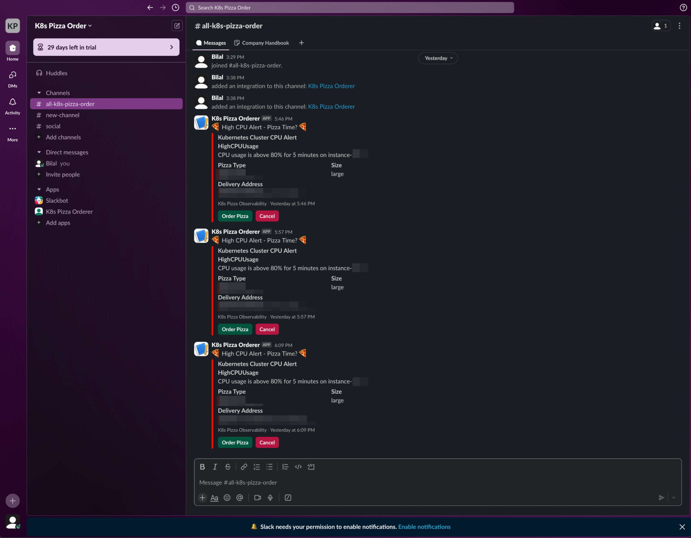
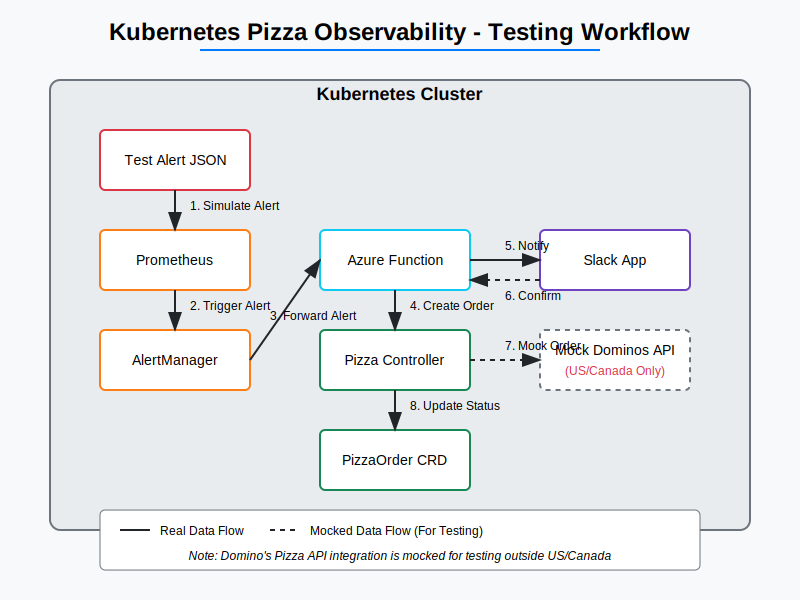
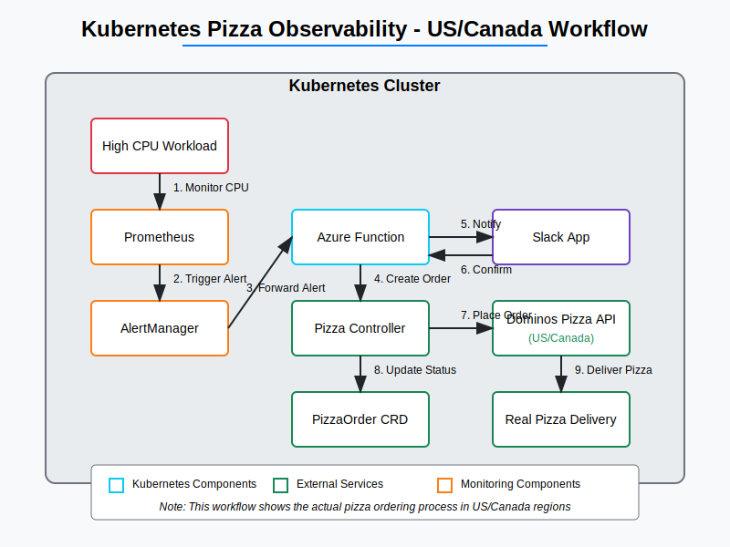

Overview
Kubernetes Pizza Observability is a fun yet practical project that combines infrastructure monitoring with automated pizza ordering. When your Kubernetes cluster experiences high CPU load, the system automatically orders pizza for your team to enjoy while they work on resolving the issues.
Quick Start
helm install pizza-observability ./helm/k8s-pizza-observability-chartArchitecture
Workflow
Monitor
Prometheus monitors your Kubernetes cluster metrics
Alert
When CPU usage exceeds the configured threshold, an alert is triggered
Route
AlertManager routes the alert to the Azure Function
Create
The Azure Function creates a PizzaOrder custom resource
Order
The Pizza Controller processes the order and communicates with the Dominos API
Notify
A Slack notification is sent for order confirmation
Deliver
Pizza is delivered to your specified address
Components
Prometheus & Grafana
Monitors cluster metrics and visualizes CPU usage in real-time dashboards
AlertManager
Routes alerts to the Azure Function when CPU thresholds are exceeded
Azure Function
Serverless function that receives alerts and creates PizzaOrder custom resources
Custom Resource Definition
Defines the PizzaOrder resource type in your Kubernetes cluster
Pizza Controller
Kubernetes controller that watches for PizzaOrder resources and processes them
Slack App
Sends notifications about pizza orders and delivery status
Installation
Prerequisites
- Kubernetes cluster (v1.16+)
- Helm 3
- Prometheus & AlertManager
- Azure subscription
- Slack workspace with admin access
- Dominos account with payment method
Helm Installation
git clone https://github.com/yourusername/k8s-pizza-observability.git
cd k8s-pizza-observability
helm install pizza-observability ./helm/k8s-pizza-observability-chartConfiguration
Edit the values.yaml file to configure:
- Dominos API credentials
- Delivery address
- Pizza preferences
- CPU threshold for alerts
- Slack webhook URL
Demo
Kubectl in Action

Managing Kubernetes resources with kubectl
Testing Workflow
Testing the complete workflow
US/Canada Workflow
Workflow for US and Canada regions
Contributing
How to Contribute
We welcome contributions to the Kubernetes Pizza Observability project! Here's how you can help:
- Fork the repository
- Create a feature branch
- Make your changes
- Submit a pull request
Please ensure your code follows our style guidelines and includes appropriate tests.
Read Contributing Guidelines